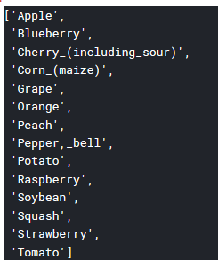

{% extends "base.html" %} {% block content %}
List of Crops on which model can be used for prediction

List of Crop Diseases on which model can be used for prediction

Use clear images of leaves on which our model can convolve and identify disease if exists
Here is an example image

Hope our Model is working nice for you
Thanks for the visit
{% endblock %}